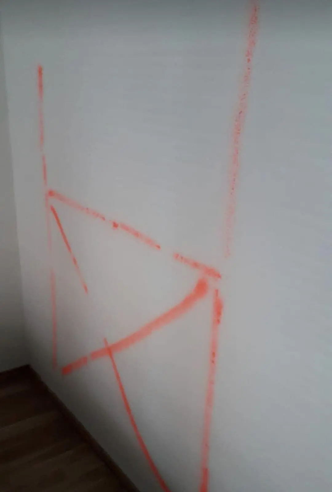

Tjänster
Små och stora rivningar, krävande saneringar och håltagning som gör byggnaden eller rummet färdigt – det är arbeten vi utför regelbundet. Vi arbetar också med friläggning av rör vid fuktskador, som konsulter inom bygg och med bemanning av byggpersonal.
Vad kan vi hjälpa dig med?

Rivning
Tunga och lätta rivningsjobb: hela byggnader eller delar av dem, lägenheter, enstaka rum och väggar – och stambytesrivning åt stora byggföretag.
Innan vi börjar kontrollerar vi vilka material som finns i byggnaden och hur konstruktionen hänger ihop. Sortering och miljöriktig hantering av avfallet ingår.

Sanering
Mögel, asbest, vattenskador, olja, lukt och klotter – och marksanering och rengöring av avlopp, rör och fasader.
Skadliga ämnen saneras i inplastade zoner. Akuta ärenden tar vi så snart vi kan.

Håltagning & friläggning
Kärnborrning, vägg- och golvsågning för rör, ventilation, dörrar och trappor – och friläggning av rör vid fuktskador i golv, väggar och golvbrunnar.
Vi gör hål i betongen efter gjutning och förbereder för installationer och kabel- och eldragning.

Konsult & bemanning
Vi arbetar som konsulter åt både små och stora företag, och tillhandahåller erfaren byggpersonal till rivning, renovering och annan typ av bygg.
Ibland kan vi bemanna med kort varsel, men de flesta jobb kräver planering. Hör av dig i god tid.
Så går ett uppdrag till
- 1

Förfrågan
Beskriv jobbet i formuläret eller ring oss. Vi svarar inom 24 timmar, även på helger.
- 2

Provtagning
Vi går igenom material och konstruktion och tar prover, så att inget rasar och inga skadliga ämnen sprids.
- 3

Offert och plan
Med prover och ritningar som grund planerar vi ett säkert arbete enligt gällande regler och lagar.
- 4

Utförande
Vi håller dig uppdaterad under hela processen och sorterar avfallet för återvinning.